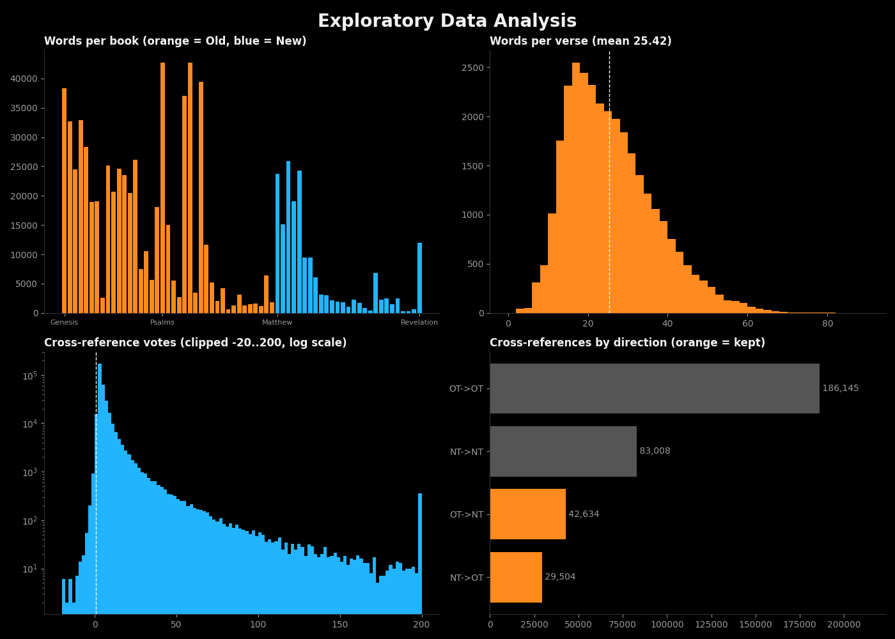
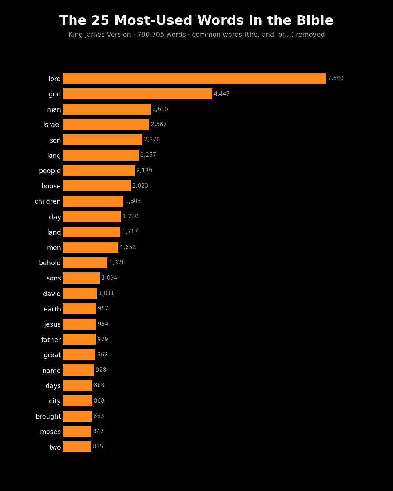
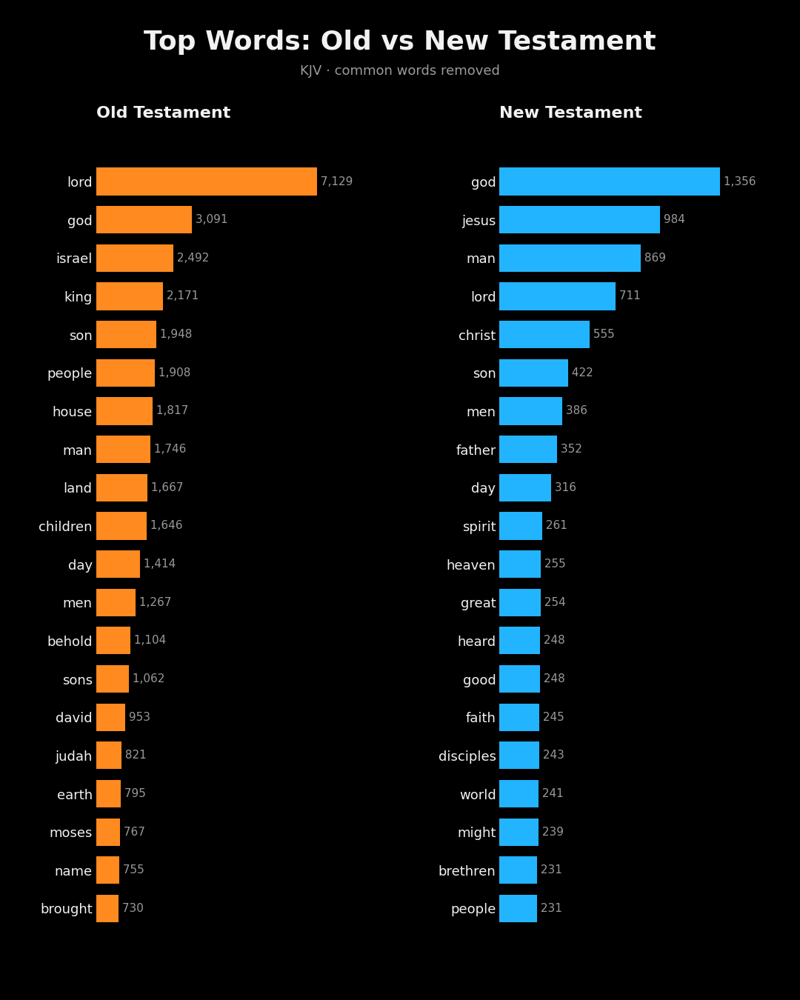
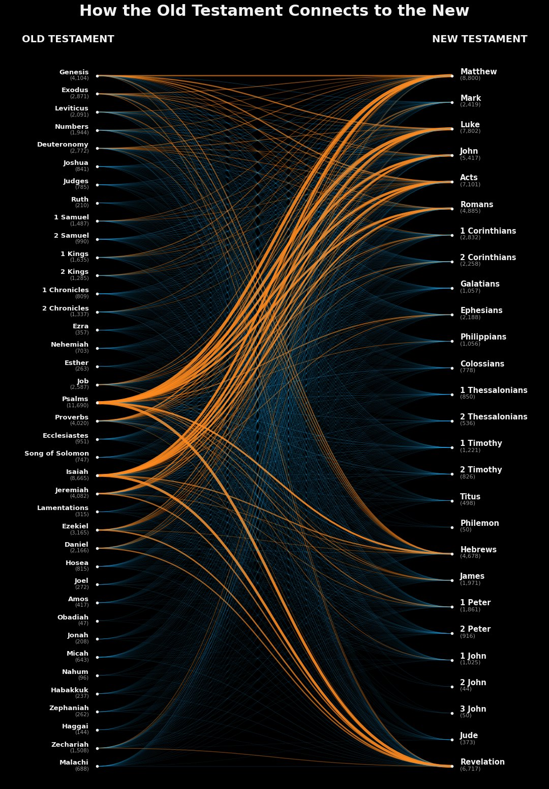
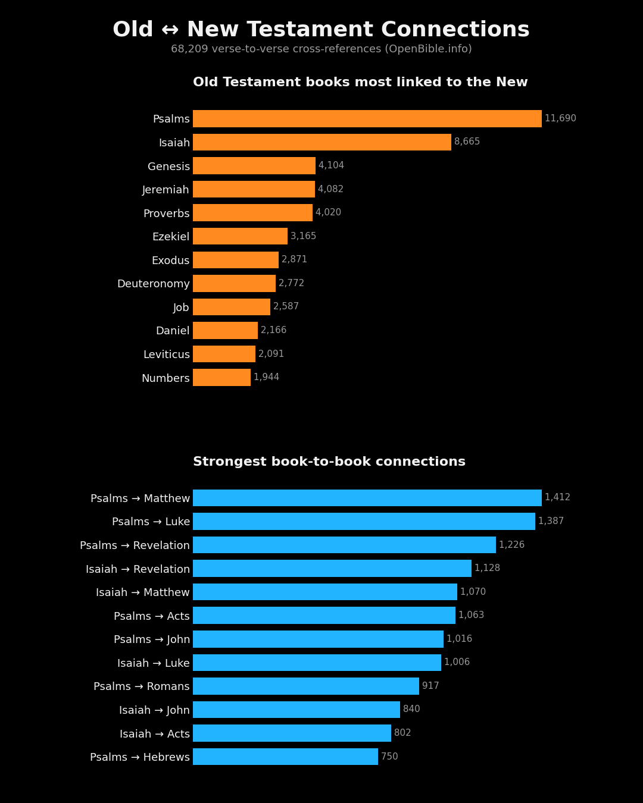
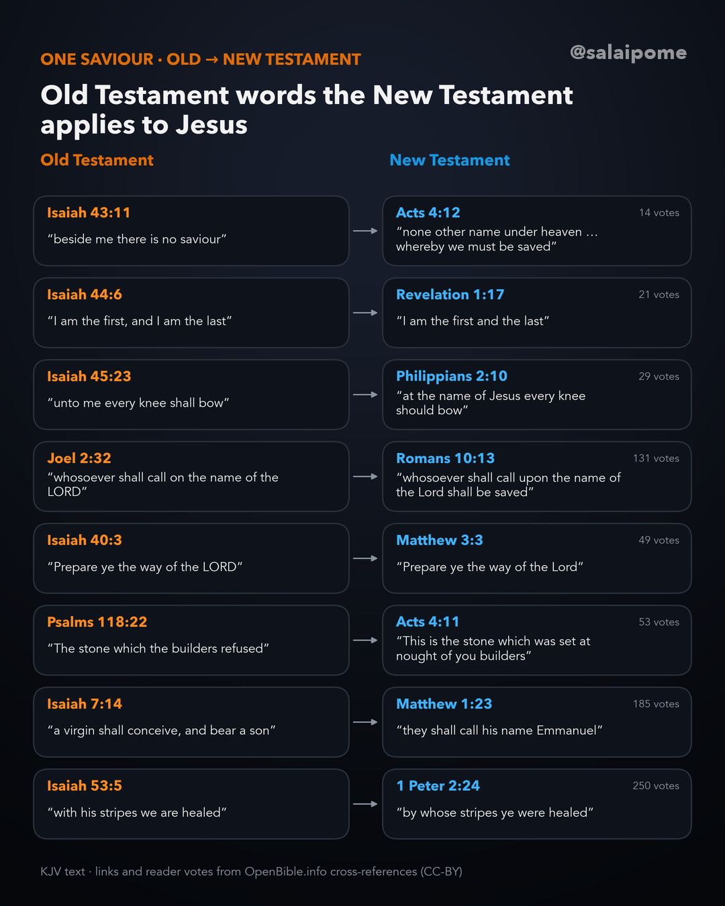

Brief
Two questions: which words does the Bible use most, and how does the Old Testament connect to the New? The starting point was a popular chart of Old-to-New Testament links. The goal was to rebuild it from open data, show every cleaning step, and turn the result into a short data film for Instagram Reels, where every number on screen comes from the final dataset.
The result
A 72-second vertical data film in six scenes: a title card whose numbers count up, bars that grow in sequence, a connection map whose 846 book-to-book curves draw themselves before the camera zooms in on Psalms and Isaiah, the strongest links, and three takeaways. The soundtrack is a strings arrangement of How Great Thou Art built in code and timed to the scenes, so the refrain peaks as the connection map zooms in.
The process
Six steps, each a short Python script, so the whole pipeline reruns from two downloaded files:
- Get the data
- Prepare the text
- Clean the cross-references
- Explore the data (EDA)
- Analyse: word counts and the connection matrix
- Deep dive: how the “only Saviour” verses connect to Jesus
Step 1 · Get the data
Two open datasets. The King James Version text arrives as nested JSON (book → chapter → verse). The OpenBible.info cross-references are 344,799 crowd-sourced verse-to-verse links, each with a reader vote count from −86 to 1,300 (median 3).
curl -L -o kjv.json \
https://raw.githubusercontent.com/thiagobodruk/bible/master/json/en_kjv.json
curl -L -o xref.zip https://a.openbible.info/data/cross-references.zip
unzip xref.zip # cross_references.txt: From Verse, To Verse, VotesStep 2 · Prepare the text
Flatten the JSON to one row per verse (31,102 rows), label books 1–39 Old Testament and 40–66 New, then split each verse into words. The regex lowercases text and keeps possessives like lord's together, while dropping numbers and punctuation.
# the file starts with a byte-order mark
books = json.load(open("kjv.json", encoding="utf-8-sig"))
word_re = re.compile(r"[a-z]+(?:'[a-z]+)?")
rows = []
for i, b in enumerate(books):
for c, chapter in enumerate(b["chapters"], 1):
for v, text in enumerate(chapter, 1):
words = word_re.findall(text.lower().replace("’", "'"))
testament = "OT" if i < 39 else "NT"
rows.append((b["name"], testament, c, v, len(words), words))
df = pd.DataFrame(rows, columns=["book", "testament", "chapter",
"verse", "n_words", "words"])Checks at this step: 0 empty verses and 0 editorial annotations. The regex splits hyphenated names like Beer-sheba, which is why the total of 790,705 words sits about 1% above the usually quoted ~783,000. The rankings are unaffected.
Step 3 · Clean the cross-references
Map every reference such as Ps.23.1 to its book with a 66-code lookup, drop links that
readers voted down, keep only links that cross between the testaments, and collapse pairs that were
listed in both directions.
x = pd.read_csv("cross_references.txt", sep="\t", skiprows=1,
names=["src", "dst", "votes"])
x = x[x.votes > 0] # drop disputed links: 3,508
# "Ps.23.1" -> "Psalms" (0 unmapped)
x["sb"] = x.src.str.split(".").str[0].map(CODE2NAME)
x["db"] = x.dst.str.split(".").str[0].map(CODE2NAME)
# Old <-> New only: 72,138 rows
cross = x[x.sb.isin(OT) != x.db.isin(OT)]
# put every pair in Old -> New order, then one row per pair
ot_first = cross.sb.isin(OT)
cross["ov"] = cross.src.where(ot_first, cross.dst)
cross["nv"] = cross.dst.where(ot_first, cross.src)
pairs = cross.groupby(["ov", "nv"], as_index=False).votes.max() # 68,209| Step | Rule | Rows |
|---|---|---|
| Disputed links | drop rows with votes ≤ 0 | 3,508 dropped |
| Book codes | all codes map to a book | 0 unmapped |
| Scope | keep Old ↔ New links only | 72,138 kept |
| Duplicates | pair listed both ways → keep one | 3,929 collapsed |
| Final dataset | unique verse pairs | 68,209 |
Step 4 · Explore the data (EDA)
Before ranking anything, I profiled the text and the links to see what could bias the results.
df.groupby("testament").n_words.sum() # OT 610,220 · NT 180,485
df.n_words.describe() # mean 25.4, median 24 words per verse
df.loc[df.n_words.idxmin()] # John 11:35, "Jesus wept." (2 words)
x.votes.describe() # -86 to 1,300, median 3: heavily skewed
- The Old Testament is 77% of the text (610,220 of 790,705 words), so whole-Bible counts lean towards its vocabulary. That is why each testament is also ranked on its own.
- The 10 most common words make up 28.8% of all text, and the alone appears 63,938 times. Removing stop words is essential.
- Votes are heavily skewed. Most links have a few votes and only 368 pairs have 100 or more, so votes are used to rank the strongest verse links, while book totals simply count links.
- Links within the Old Testament dominate the raw file (186,145 rows). Links between the testaments are 21%.
Step 5 · Analyse
Word counts use the tokens from step 2 with about 150 grammar and archaic filler words removed (the, and, unto, thee, hath, shalt). The raw counts are kept too. The connection matrix counts verse pairs for every Old × New book combination (39 × 27).
counts = Counter(w for words in df.words for w in words)
# LORD 7,840 · God 4,447 · man 2,615 …
content = [(w, n) for w, n in counts.most_common() if w not in STOP]
# 39 x 27 table of link counts
matrix = pairs.pivot_table(index="ot", columns="nt", values="votes",
aggfunc="size", fill_value=0)


Psalms (11,690 links) and Isaiah (8,665) carry 29.8% of every connection between the testaments. On the New Testament side, Matthew (8,800), Luke (7,802), Acts (7,101) and Revelation (6,717) draw on the Old the most. The strongest book pair is Psalms → Matthew with 1,412 links, and the most-voted single link is Jeremiah 1:5 → Romans 8:29 (1,154 votes).

Step 6 · Deep dive: one Saviour
To test the connection map on a single theme, I followed one question through the data: how do the Old Testament's “only Saviour” verses connect to Jesus in the New? Isaiah 43:11 says “I, even I, am the LORD; and beside me there is no saviour”, and Hosea 13:4 and Isaiah 45:21–22 repeat it.
I flagged every New Testament verse that names Jesus or Christ, then compared two groups of links: all 68,209, and the 1,277 that start from the 150 Old Testament verses using saviour, salvation, redeemer or deliverer.
pairs["names_jesus"] = pairs.nt_text.str.contains(r"\b(?:Jesus|Christ)\b")
pairs.names_jesus.mean() # 13.4% of all Old <-> New links
SAL = {"saviour", "salvation", "redeemer", "deliverer"}
sal_ot = {ref for ref, words in ot_verses if words & SAL} # 150 verses
sal = pairs[pairs.ov.str.split("-").str[0].isin(sal_ot)] # 1,277 links
sal.names_jesus.mean() # 20.9%, about 1.6x the baselineSalvation verses lead to verses naming Jesus about 1.6 times as often as the average link. The flag only counts the words “Jesus” and “Christ”, so verses such as “unto the Lamb” (Revelation 7:10) are missed and the 20.9% is a floor. Following the “only Saviour” verses themselves:
| Old Testament | Top New Testament links | Votes |
|---|---|---|
| Isaiah 43:11 | Acts 4:12 · Jude 1:25 | 14 · 8 |
| Hosea 13:4 | Acts 4:12 | 8 |
| Isaiah 45:22 | Titus 2:11 · John 6:40 | 36 · 33 |
| Isaiah 44:6 | Hebrews 13:8 · Revelation 1:8 | 72 · 68 |
The clearest evidence is where the New Testament itself takes words the Old Testament uses of the LORD and applies them to Jesus. Acts 4:12, “there is none other name under heaven given among men, whereby we must be saved”, answers Isaiah 43:11 directly. Every quote in the chart below is checked against the KJV text in code before the image is drawn.

The data can show which verses are connected and how strongly; it cannot settle the theology. The cross-references are crowd-voted, mostly by Christian readers, so the strongest evidence is the direct quotations the New Testament makes itself.
Validation
| Check | Result | Detail |
|---|---|---|
| Book-code mapping | pass | 0 of 341,291 rows unmapped |
| Cleaning reconciles | pass | 72,138 − 3,929 = 68,209 |
| On-screen numbers | pass | read from the output CSVs |
| Palette | pass | colour-blind ΔE 25.7; contrast ≥ 3:1 |
| Word total vs published | +~1% | hyphenated names split |
| Quotation vs allusion | not split | includes themes, not only quotes |
Where this points
- 01 “Connections” depends on the definition. Crowd-sourced cross-references include allusions and shared themes, so their counts run far higher than quotation-only lists. Any headline needs its source stated.
- 02 Translation shapes word counts. KJV prints the divine name as LORD; other translations, or the Hebrew and Greek, would rank differently.
- 03 Reconcile every cleaning step. Showing that the row counts add up made the final number defensible on screen.
- 04 Next step: separate direct quotations from allusions, and compare the network across translations.